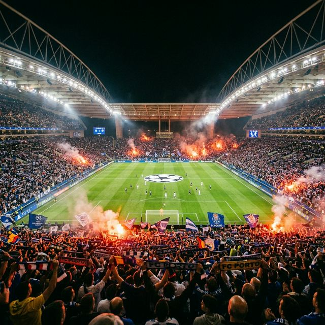
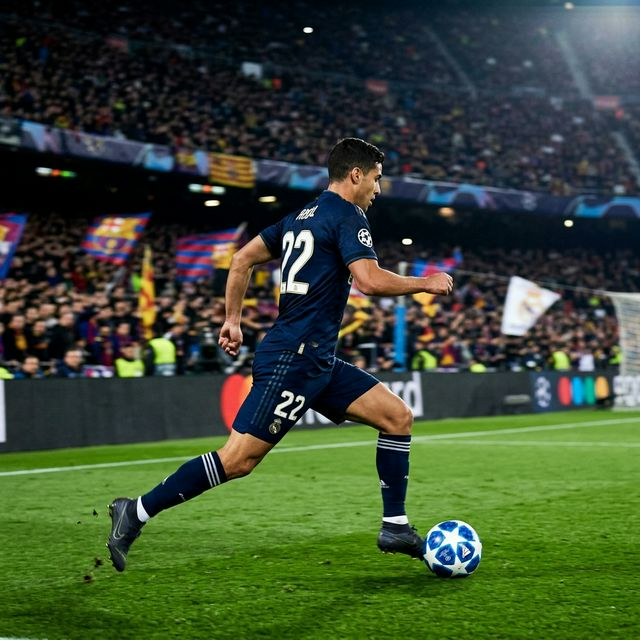
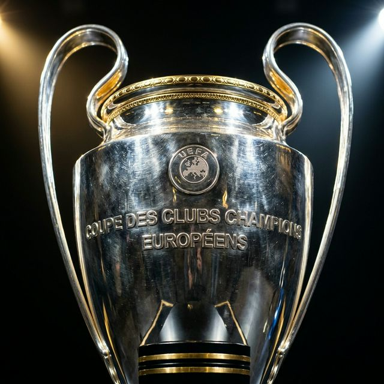

2025-26 UEFA 챔피언스리그 16강이 모두 마무리되자마자 테니스공처럼 튀어나온 8강 대진 결과에 전 유럽 축구 팬들이 경악했습니다. 유럽 최고의 엔터테인먼트 두 팀이 하필 8강에서 만나버렸기 때문입니다. PSG와 리버풀의 챔피언스리그 8강 대결은 아래와 같이 확정되었습니다.
이 대진의 의미가 남다른 이유는 여러 층위에 걸쳐 있습니다. PSG 입장에서는 오일머니를 바탕으로 네이마르·음바페 시대를 거치며 수도 없이 도전했지만 끝내 손에 쥐지 못한 UCL 우승컵(빅이어)을 마침내 들어올리기 위한 가장 중요한 관문입니다. 리버풀 입장에서는 유럽 챔피언이라는 역사를 가진 영광의 왕좌를 재탈환하려는 열망이 담긴 대전입니다.
모든 한국 축구 팬들의 최대 관심사는 단 하나, 이강인이 선발로 뛰느냐는 것입니다. 결론부터 말씀드리면, 현 시점에서 이강인의 UCL 8강 1차전 선발 출전은 '유력하지 않다'고 보는 시각이 우세합니다.
현지 매체(조선일보, 머니투데이 등)의 보도를 종합하면, 이강인은 루이스 엔리케 감독 체제 하에서 리그 경기에서는 선발로 자주 기용되어 창의적인 패스와 경기 조율 능력으로 높은 평가를 받고 있습니다. 그러나 챔피언스리그라는 더 높은 무대에서는 주로 교체 투입(조커) 자원으로 활용되어 왔습니다. 팀 내에서 치열한 주전 경쟁이 이어지는 가운데, 최근 이적 관련 이슈도 조심스럽게 거론되고 있어 출전 시간 확보가 커리어의 중요한 분수령이 되고 있습니다.

현재 PSG를 이끄는 루이스 엔리케 감독은 스페인 대표팀과 FC 바르셀로나를 통해 세계 축구 역사에 족적을 남긴 명장입니다. 그가 PSG에서 구현하고자 하는 전술적 핵심은 '포지셔널 플레이(Positional Play)'를 기반으로 한 고강도 전진 프레싱입니다. 공수 전환 시 즉각적인 하이프레스로 상대 진영 깊숙한 곳에서 공을 탈취하고, 짧고 빠른 패스 연결로 골문을 두드립니다.
이강인이 이 시스템에서 맡는 역할은 명확합니다. 공격형 미드필더(CAM) 혹은 좌측 인사이드 포워드 포지션에서 동료 선수들과의 '찰나의 패싱 콤비'를 연결하는 게임 어시스턴트(게임 창조자)의 역할입니다. 볼을 붙이지 않고도 끊임없이 포지션을 바꾸며 상대 수비 라인을 교란하는 무빙 패턴이 이강인에게 잘 맞습니다.
| 항목 | PSG (파리 생제르맹) | 리버풀 FC |
|---|---|---|
| 감독 | 루이스 엔리케 | 아르네 슬롯 |
| 전술 스타일 | 고강도 하이프레스 + 포지셔널 플레이 | 4-3-3 직선형 압박 + 빠른 측면 전환 |
| 주요 위협 요소 | 유동적 공격 전환 속도, 다양한 득점 루트 | 안필드 효과, 모하메드 살라의 경험, 높은 조직력 |
| 약점 | 빅매치 경험 부족, 실점 시 흔들리는 경향 | 원정 경기(파르크 데 프랭스) 특유의 사기 저하 |
| 한국 선수 | 이강인 (조커 활용 가능성) | 없음 |
상대 리버풀은 결코 만만한 팀이 아닙니다. 클롭 감독의 뒤를 이어 내셔널리스트 지도자 아르네 슬롯이 팀을 맡아 조용하지만 착실하게 전통적인 리버풀리즘(Liverpool-ism)을 유지하고 있습니다. 4-3-3 기반의 고속 측면 공격과 전방 압박은 PSG의 미흡한 수비 라인 앞에서 얼마든지 파괴력을 발휘할 수 있습니다.
특히 리버풀의 최대 무기는 모하메드 살라입니다. 챔피언스리그 최다 득점 역대 상위권에 드는 살라는 UCL 빅매치에서 더욱 빛을 발하는 선수로, PSG 수비진이 가장 경계해야 할 1순위 타겟입니다. 이 밖에도 루이스 디아스, 알렉산더-아놀드의 오버래핑 등 리버풀이 꺼내들 수 있는 카드는 여전히 강력합니다.

대부분의 유럽 축구 전문가들은 이번 8강을 50대 50에 가까운 초박빙 승부로 보고 있습니다. 1차전을 파리 홈에서 치르는 PSG에게는 분명히 유리한 조건이지만, 원정팀이 첫 경기에서 조심스럽게 무실점 혹은 최소 실점으로 돌아와 2차전 안필드에서 역전을 노리는 패턴도 이 대회에서 자주 나왔던 시나리오입니다.